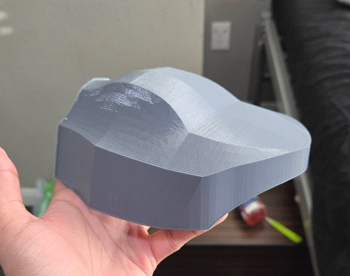
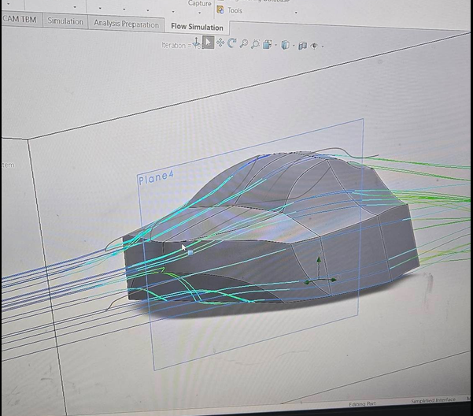
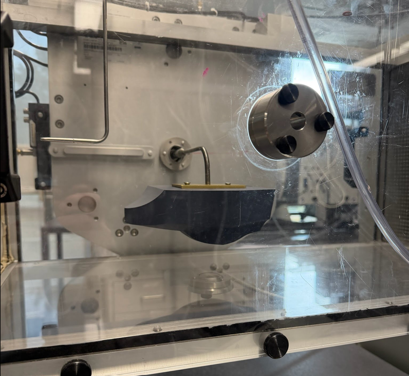

2025 · DESIGN · AERODYNAMICS · EXPERIMENTATION
Aerodynamic Car Design & Wind Tunnel Testing
Designed an aerodynamic vehicle model and evaluated its aerodynamic behavior through wind tunnel testing.

Overview
This project focused on designing a vehicle model and experimentally investigating its aerodynamic behavior. The design was meant to have low drag force. I led a team where we created the experiment and designed the car. I split the team into two sections where 1 team designed and 3D printed the car. While the other created the experimentation procedure. I designed the car and tested the car in SolidWorks Flow simulations and helped a little with the 3D printing. At the end, our team's design achieved one of the top three lowest drag force results during physical testing in the wind tunnel.
Vehicle Design
The vehicle geometry was developed with aerodynamic performance and manufacturability in mind.

Wind Tunnel Testing
The completed model was tested in a wind tunnel to investigate its aerodynamic response.

Results
Experimental observations were used to evaluate the aerodynamic behavior of the vehicle design.